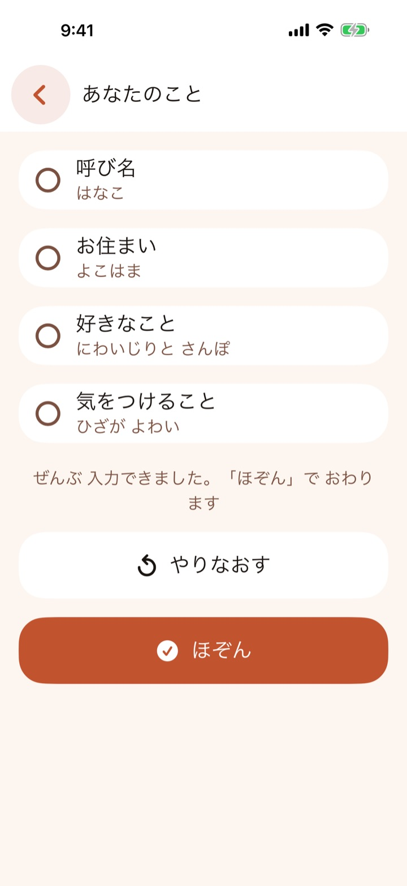
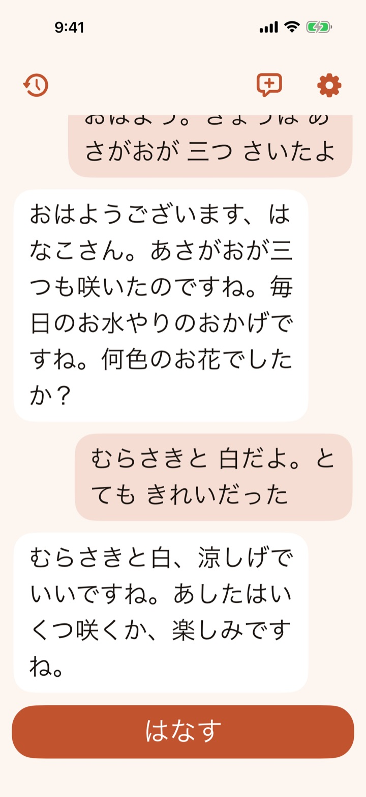
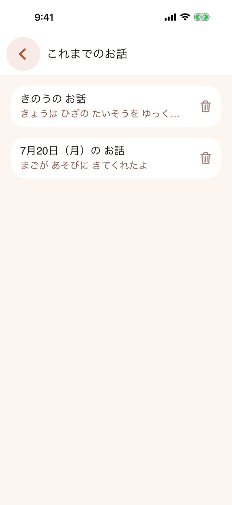

たとえば、こんなふうに。
あなたおはよう。きょうは あさがおが 三つ さいたよ
こころおはようございます、はなこさん。あさがおが三つも咲いたのですね。毎日のお水やりのおかげですね。何色のお花でしたか？
あなたむらさきと 白だよ。とても きれいだった
こころむらさきと白、涼しげでいいですね。あしたはいくつ咲くか、楽しみですね。
話したことは 文字になって 画面にのこり、こころの お返事も 文字で とどきます。
むずかしい操作は ありません。
ボタンは ひとつだけ。ふだん 人と話すように 話しかけてください。
- 一
「はなす」を押す
画面の下にある、大きなボタンを押します。
- 二
話しかける
きょうの出来事、むかしの思い出、ちょっとした心配ごと。なんでも どうぞ。
- 三
お返事を読む
こころの お返事が、吹き出しで 画面に とどきます。
毎日の、おはなし相手に。
おぼえる
あなたのことを おぼえて、寄りそいます
呼び名や、お住まいの地域、好きなこと、気をつけていること。教えてもらったことに合わせて、やさしく お返事します。

よみやすい
文字は 大きく、読みやすく
文字の大きさは 3つから えらべます。見本を見ながら、ちょうどいい大きさに できます。
ふつう大きいとても大きい

のこる
思い出は、いつでも 読みかえせます
これまでの お話は、お使いのスマートフォンの中にだけ 保存されます。読みかえすのも、消すのも、いつでも できます。

あんしんして お使いいただくために。
- 広告は ありませんお話の とちゅうで 広告が出ることは ありません。
- 登録は いりませんメールアドレスや パスワードの 入力は 不要です。
- お話は 外に のこりません会話の内容は、お返事を作るためにだけ 使われます。外部に保存されることは ありません。
はなれて暮らす ご両親の、話し相手に。
スマートフォンの操作に 慣れていない方でも、ボタンひとつで お話しできるように つくりました。はじめの設定を、いっしょに してあげてください。
- はじめて開いたときに、使いかたを ていねいに ご案内します。
- 呼び名や 好きなことは、あとから 設定画面で 入力・変更できます。
- 文字の大きさも、見本を見ながら その場で 変えられます。
- 無料期間が 終わっても、自動で おしはらいが 始まることは ありません。
こころ 制作チーム
まずは 14日間、無料で おためしください。
- 14日間の無料期間が 終わっても、自動で おしはらいは 始まりません。つづけたいときだけ、アプリの「ごりようプラン」から お申し込みください。
- お申し込みの日から 月々1,000円の おしはらいが 始まり、ひと月ごとに 自動で つづきます。お支払いは App Store または Google Play の アカウントに 請求されます。
- やめたいときは、いつでも かんたんに やめられます。更新日の24時間前までに、スマートフォンの サブスクリプション管理から 解約してください。
- 購読をやめても、これまでの お話は 消えません。
わからないことが あるときは。
文字を打つ必要は ありますか？
ありません。「はなす」ボタンを押して 話しかけるだけで お使いいただけます。
お返事は 声で 読み上げてくれますか？
お返事は、画面に 文字で 表示します。文字の大きさは 3段階から えらべます。
インターネットは 必要ですか？
こころと お話しするときは、インターネットへの接続が 必要です。これまでの お話を 読みかえすことや、設定の変更は、つながっていなくても できます。
どのスマートフォンで 使えますか？
iPhone・iPad（iOS 17 以降）と、Android（Android 8.0 以降）で お使いいただけます。
1日に 何回でも お話しできますか？
1日 100回まで お話しできます。上限になったときは、日付が変わると また お話しできるようになります。
機種を変えたら、どうなりますか？
月額プランは、アプリの「ごりようプラン」にある「おしはらいを ひきつぐ」から、新しい機種でも そのまま お使いいただけます。お話の記録は 端末の中にだけ 保存しているため、新しい機種には 引き継がれません。